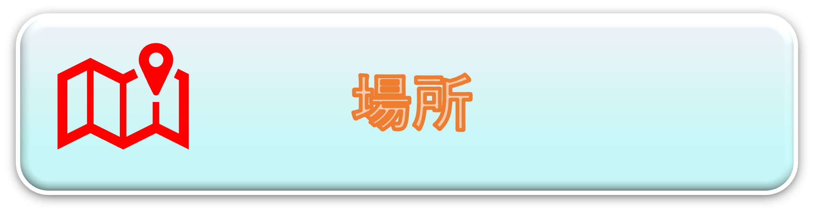

目次
このページでは下記の場所のアクセスについて記載しています。
・東京駅バス集合場所(丸の内鍛冶橋駐車場)
・東京駅バス解散場所(東京駅日本橋口)
・横浜駅バス解散場所(横浜駅西口)
・スパリゾートハワイアンズ-アクセス
・スパリゾートハワイアンズ-館内マップ
・アクアマリンふくしま
・いわき・ら・ら・ミュウ
・メヒコ
東京駅バス集合場所(丸の内鍛冶橋駐車場)
JR東京駅八重洲南口改札を出て、駅前の大通り(外堀通り)に沿って右(有楽町方面)へ進み、徒歩約5分。
JR東京駅八重洲中央口改札を出ても、徒歩約10分で到着できます。
外堀通りと鍛冶橋通りとの交差点角にある駐車場が集合場所です。
駐車場内のバス乗り場への道順は案内に従ってください。
外堀通りを挟んで向かい側にはブリヂストン本社ビルがあるのが目印です。
集合場所・バスについての詳細はこちら
GoogleMapはこちら
▲ページトップに戻る
東京駅バス解散場所(東京駅日本橋口)
復路は往路とは異なる場所で下車となります。(上記地図参照)
解散場所・バスについての詳細はこちら
▲ページトップに戻る
横浜駅バス解散場所(横浜駅西口)
解散場所の詳細がなかったため、申し訳ないです…
復路のタイムスケジュール等は下記資料から確認できます。
解散場所・バスについての詳細はこちら
▲ページトップに戻る
スパリゾートハワイアンズ-アクセス
住所：〒972-8326 福島県いわき市常磐藤原町蕨平50
GoogleMapはこちら
TEL：0570-550-550（ナビダイヤル）
(自家用車でのアクセス)
仙台方面からの所要時間：約2時間10分。
仙台宮城IC＝(東北自動車道)郡山JCT(磐越自動車道)いわきJCT(常磐自動車道)＝いわき湯本IC
※東北方面から来る場合は福島県内に通行止めの箇所があるため、
道路交通情報センターのHP
を確認ください。
自家用車でのアクセスの詳細はこちら
▲ページトップに戻る
スパリゾートハワイアンズ-館内マップ
各種館内マップのリンクは下記の通りです。
・スパリゾートハワイアンズ全体の館内マップ
・ホテルハワイアンズの館内マップ
・飲食店の館内マップ
・ショップの館内マップ
・駐車場
▲ページトップに戻る
アクアマリンふくしま
住所：〒971-8101 福島県いわき市小名浜字辰巳町50
GoogleMapはこちら
TEL：0246-73-2525
(施設概要)
「海を通して『人と地球の未来』を考える」の理念を掲げる環境水族館。
シーラカンスの研究展示、サンマの飼育展示の他、大水槽を眺めながら寿司を堪能できる寿司処、釣り体験ができるエリアなど独特な設備も魅力的。
観覧想定時間は約1時間30分～3時間。体験コーナー等に参加した場合は約2時間～半日程度。
アクアマリンふくしまの公式HPはこちら
(自家用車でのアクセス)
常磐自動車道いわき湯本ICから約20分。
駐車場代は無料だが、混雑の可能性あり。
アクアマリンふくしまへのアクセスの詳細はこちら
(入館料割引)
スパリゾートハワイアンズ宿泊者限定の割引料金は下記の通り。
・大人： ¥1,850(税込) ⇒ ¥1,650(税込)
・小～高校生：¥ 900(税込) ⇒ ¥ 800(税込)
ホテルハワイアンズ売店PanaPanaにて販売。
割引チケットの詳細はこちら
▲ページトップに戻る
いわき・ら・ら・ミュウ
住所：〒971-8101 福島県いわき市小名浜字辰巳町43-1
GoogleMapはこちら
TEL：0246-92-3701
(施設概要)
「いわきのいいものぜんぶある。」をキャッチフレーズにした観光物産センター。
食事処、お土産屋などの店舗が充実している。
アクアマリンふくしまと立地が隣接しているため、立ち寄るには便利。
いわき・ら・ら・ミュウの公式HPはこちら
(自家用車でのアクセス)
常磐自動車道いわき湯本ICから約20分。
駐車場あり。
いわき・ら・ら・ミュウへのアクセスの詳細はこちら
▲ページトップに戻る
メヒコ
(会社概要)
カニを中心としたシーフードレストランチェーン。いわき市内には3店舗ある。
独特な店内装飾が話題。名物はカニピラフ。
メヒコ公式HPはこちら
メヒコ いわきフラミンゴ館
住所：〒971-8141 いわき市鹿島町走熊字四反田3
GoogleMapはこちら
TEL：0246-29-4407
常磐自動車道いわき湯本ICから約25分。ハワイアンズからは約30分。
駐車場あり。
メヒコ いわきフラミンゴ館公式HPはこちら
メヒコ シャークワールド
住所：〒971-8132 福島県いわき市鹿島町下矢田17-1
GoogleMapはこちら
TEL：0246-29-2227
常磐自動車道いわき湯本ICから約25分。メヒコ いわきフラミンゴ館も近い。
駐車場あり。
メヒコ シャークワールド公式HPはこちら
メヒコ いわきマリンタワー店
住所：〒970-0316 いわき市小名浜下神白字大作93
GoogleMapはこちら
TEL：0246-54-3737
常磐自動車道いわき勿来ICから約25分。アクアマリンふくしまからは約5分。
駐車場あり。
メヒコ いわきマリンタワー店公式HPはこちら
▲ページトップに戻る